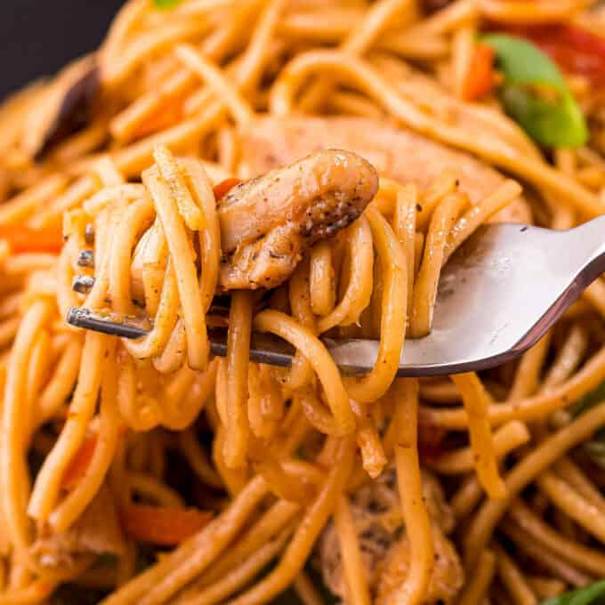

Chicken Lo Mein

Ingredients
Stir Fry
- 10 oz dried lo mein noodles
- 1 lb. boneless skinless chicken breasts sliced into thin strips or bite sized pieces
- 1 tsp kosher salt
- 1/4 to 1/2 tsp black pepper
- 1 Tbsp toasted sesame oil
- 3 cloves garlic minced
- 1 Tbsp grated fresh ginger (ginger paste can be substituted)
- 2 Tbsp vegetable oil divided
- 1 1/2 cups pre-shredded carrots (or an equal amount of peeled, sliced, and julienned carrots)
- 1 red bell pepper thinly sliced
- 6 oz fresh snow peas
- 3 to 4 oz shiitake mushrooms sliced
Sauce
- 1/4 cup reduced sodium chicken broth
- 1/4 cup reduced sodium soy sauce light or dark will work
- 1 to 2 Tbsp packed light brown sugar
- 1 Tbsp hoisin sauce
- 1 Tbsp oyster sauce
- 1 tsp cornstarch
- 1 tsp toasted sesame oil
Garnish
Instructions
Prepare
- Make sure to chop and prepare all ingredients before starting the cooking process, since stir fry recipes generally move quickly.
- Whisk sauce ingredients together in a small mixing bowl, then set aside.
Cook noodles
- Follow package instructions for cooking noodles to al dente. Drain and set aside.
- To a mixing bowl, add chicken, salt, pepper, and 1 Tbsp sesame oil. Stir well and set aside.
- To save time, while the water is coming up to a boil and noodles are cooking, move forward with the following steps.
Stir fry
- Heat a large skillet over MED HIGH heat with 1 Tbsp of the vegetable oil./li>
- Once hot, add chicken and cook for 3-4 minutes, stirring occasionally, until cooked through.
- Add garlic and ginger and cook 30 seconds to 1 minute, stirring very often so they don't burn.
- Remove chicken mixture to a plate and set aside.
- Add remaining 1 Tbsp vegetable oil to the skillet, then add carrots and peppers. Cook over MED HIGH heat for 3 minutes, stirring occasionally.
- Add peas and mushrooms, cooking another 2 minutes, stirring frequently.
Add sauce
- Return chicken mixture to the skillet with the vegetables, add in drained pasta, and pour in sauce.
- Cook 3-5 minutes, until the sauce has thickened a bit and coated everything well.
Garnish
- Top with sliced green onions if desired and serve hot.